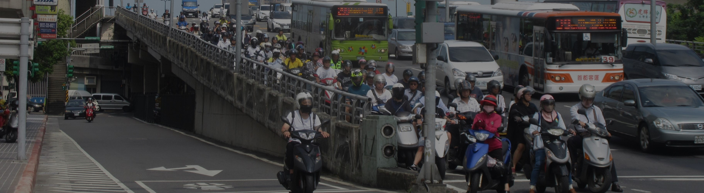
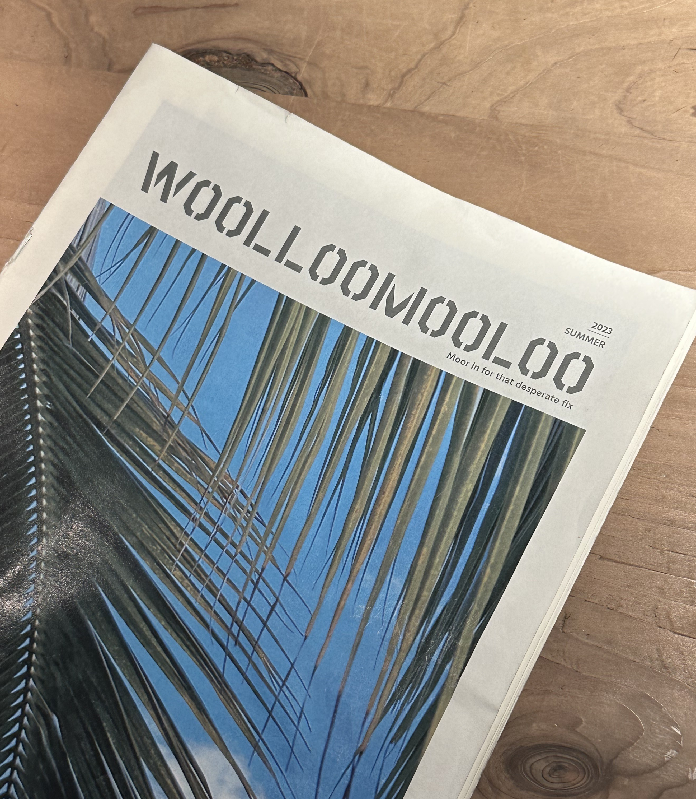
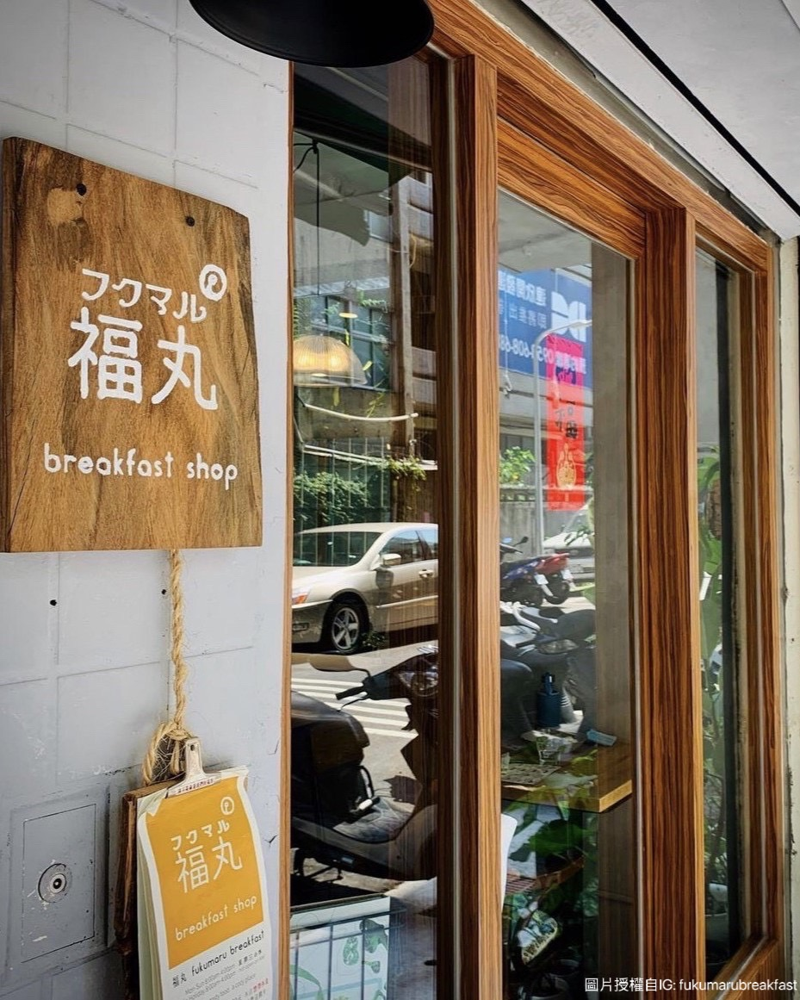
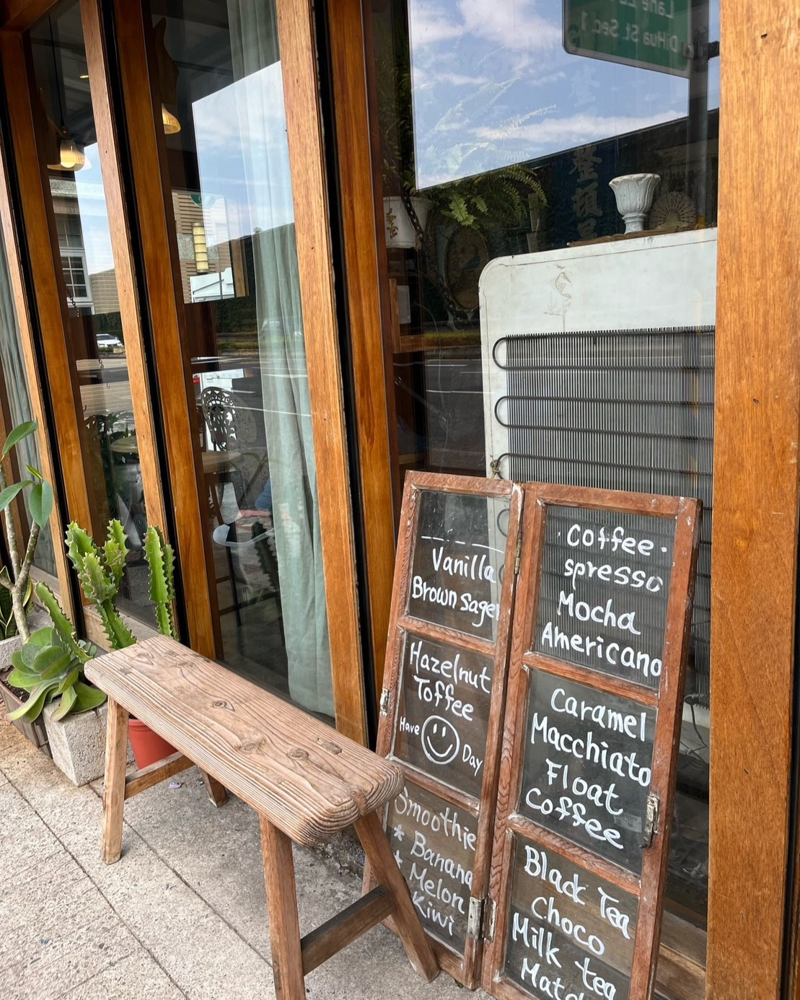
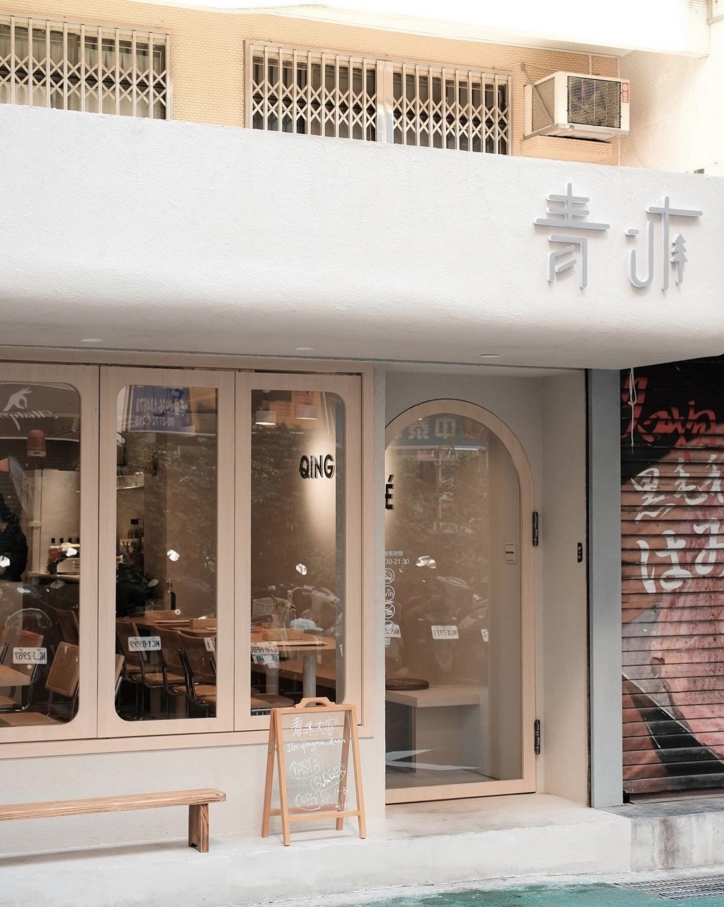

台北必吃的五大早午餐店!!|YUM YUMZ

YUM YUMZ 早午餐篇
周末就適合賴床到中午，再輕鬆愜意的去吃個早午餐開啟美好的一天
(滑鼠放在圖片上可以看到推薦指數喔~~)
YUM美味
YUM實惠
第一間:Woolloomooloo

Woolloomooloo位於台北信義，靠近捷運台北101/世貿站或是捷運信義安和站，是一間澳式餐廳，其餐點品項有非常多種，正餐、甜點、酒類全都涵蓋。全日供餐，滿足各種需求。
⏰SUN.-THU. 07:30-00:00
FRI.-SAT. 07:30-01:00
📍台北市信義路4段379號
☎️02 8789 0128
Facebook:Woolloomooloo
共有兩層樓，一樓除了餐廳，還有酒吧!整體設計走率性工業風，空間寬敞，有多張大長桌，很適合當聚會場所！
其還免費附有wifi及插頭，也是很多上班族喜愛的地點。
菜單十分多樣，種類有接近100種，必點的為鴨油煎鴨蛋開放三明治，鴨油煎蛋非常香加上甜甜鹹鹹的炒洋蔥，配上麵包，
整體口味非常和諧好吃!以及沐露經典早午餐，經典早午餐盤，內容多樣豐富，一次滿足所有需求!
總體來說，這家餐廳以其獨特的工業風格、精緻的空間設計、以及美味的料理，為顧客提供了非常良好放鬆的用餐體驗。
第二間:Numero quatre
Numero quatre位於台北信義，靠近捷運市政府站或是捷運國父紀念館站，是一間法式餐廳，良好的環境&氣氛使你一秒來到法國街頭的感覺，店名NUMÉRO QUATRE，在法文中是數字4的意思，所以店內處處可見444這串數字，意思是「天使就在你身邊，可以去追尋夢想」。
⏰MON.-SUN. 11:00-18:00
📍台北市信義區忠孝東路4段553巷22弄5號
☎️02 2756 4445
Instagram:Numero quatre
店內裝潢簡約，有大量復古老舊的傢俱，店內除了有大桌子可供聚會外，也有靠窗的位置，所以自己一個人來也不用擔心!
菜單為手繪隨性風，非常之可愛，早午餐款式不多，僅有早午餐拼盤和可頌以及甜點，每一樣都有其特色!!
這次我們點了早午餐拼盤，班尼迪克蛋的熟度恰到好處，配上外皮酥脆，裡面蓬鬆Q彈的布里歐吐司加上松露野菌的點綴，簡直恰到好處!
另外還點了煙燻鮭魚班尼迪克，燻鮭魚花淋上鮭魚卵，燻鮭魚很新鮮，達到味蕾的衝擊。
第三間:福丸

福丸位於台北中正，靠近捷運東門站，是一間森林系餐廳，店內種植了非常多種植物，讓人有種放鬆的感覺~木質招牌以及門框也讓人有種文青感~餐點販售主要以店家自製的麵包為主!
⏰FRI.-MON. 09:00-16:00
📍台北市中正區杭州南路一段131巷35-1號
☎️02 2391 0166
Instagram:福丸
店內空間小小的，可以容納的顧客數不多，客滿時人力也比較不夠，可以接受等待的人再前往呦~
我們這次點青炒野菇早餐盤，貝果表皮酥脆，內部有嚼勁，整體吃起來不會太乾或太硬，是好吃的貝果!生菜沙拉種類多樣，給得非常有誠意!
薯塊本身就有調味，單吃就很有味道!另一份單點培根酪梨三明治，結合了培根的咸香和酪梨的奶油質地，兩者綜合得非常好
整體而言，福丸的貝果非常有記憶點，值得再次拜訪!
第四間:耳邊風

耳邊風位於台北大同區，於大稻埕商圈最邊緣的外圍區域，接近捷運大橋頭站，為一間充滿復古風格的早午餐，不同於漂亮新建的網美咖啡廳，耳邊風由鐵皮屋廢墟改建而成，門口有一台招牌復古偉士牌機車，整個散發出滿滿的復古氛圍~
⏰FRI.-MON. 11:00-18:00
📍台北市大同區迪化街一段224巷26號
☎️02 2552 8185
Instagram:耳邊風
整體內部空間挑高，有一層小閣樓，但整體空間也不大，店內擺設很多復古老物，處處充滿懷舊元素
這次我們點了煙燻鮭魚炒菇開放式三明治，煙燻鮭魚豐富的油脂配上炒菇不僅增加了口感的層次，還帶來了濃郁的蕈菇香氣，
再抹上黃芥末籽醬料，達到畫龍點睛的作用!甜點的部分我們點芋泥巴斯克起司蛋糕，
乳酪內餡濃郁的奶味，外皮散發著一點微焦的香氣，配上濃密的芋泥，讓人一吃就愛上!
第五間:青沐(大安店)

青沐位於台北大安區，接近捷運忠孝復興站，走一種文青、奶茶色系的韓式文青風格，柔和的奶茶色系在低調的小巷內顯得格外亮眼青沐從早營業到晚，中間無休息，任何時刻想前往都可以!
⏰MON.-SUN. 10:30-21:30
📍台北市大安區大安路一段52巷25號
☎️02 2775 4790
Instagram:青沐
(圖片授權自IG: yong90128)
整體內部空間不大，使用大片門窗，整體採光良好，白色的環境讓人非常放鬆，非常適合聚會!
餐點非常多樣，早午餐、漢堡、義大利麵、燉飯都有!除了鹹食外，還有多種甜點飲料可以選~
這次點了柚子胡椒很多海鮮麵，海鮮的部分有干貝、蛤蜊、白蝦、鱸魚、鮭魚、蟹肉、鮮蝦、鮭魚卵，海鮮量給的超足!
沒有過多調味，僅用柚子胡椒提升香氣，滿滿的鮮味相當好吃!
國王花生鳳梨牛肉起司堡，使用自製的手打漢堡排，吃起來多汁美味，焦糖洋蔥味道凸出，鳳梨解膩，
每一樣配料都做了良好的搭配平衡，配餐薯片又薄又脆，吃起來非常涮嘴
最後，甜點的部分選了肉桂焦糖香蕉可朗芙，結合了肉桂的香氣、焦糖的甜蜜和香蕉的滑順口感，口感層次豐富!
⏫